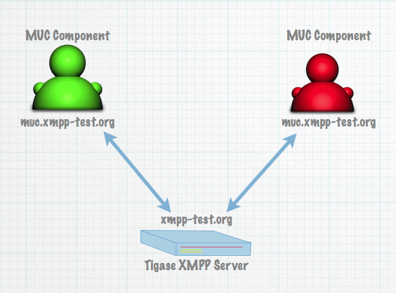

Table of Contents
Artur Hefczyc <artur.hefczyc@tigase.net> v2.0, June 2014: Reformatted for AsciiDoc. :toc: :numbered: :website: http://tigase.net :Date: 2011-07-09 22:45
This document describes how to load balance any external components using Tigase XMPP Server and how to make Tigase’s components work as external components in a cluster mode.
Please note, all configuration options described here apply to Tigase XMPP Server version 5.1.0 or later.
These are actually 2 separate topics:
Here are step by step instructions and configuration examples teaching how to achieve both goals
The first, simple scenario is to connect multiple instances of an external component to a single Tigase XMPP Server to distribute load.
Why would you like to do that? There are at least 2 reasons, one would be to spread load over more instances/machines and the second is to improve reliability in case one component fails the other one can take over the work.
So here is a simple picture showing the use case.

We have a single machine running Tigase XMPP Server and 2 instances of the MUC component connecting to the Tigase. First example configurations.
The server configuration
config-type = --gen-config-def
--user-db = mysql
--admins = admin@devel.tigase.org
--user-db-uri = jdbc:mysql://localhost/db?user=tigase&password=tigase
--virt-hosts = devel.tigase.org
--comp-name-1 = ext
--comp-class-1 = tigase.server.ext.ComponentProtocol
--external = muc.devel.tigase.org:muc-secret:listen:\
5270:devel.tigase.org:accept:ReceiverBareJidLBAnd configuration for both instances of the MUC component (identical for both of them):
config-type = --gen-config-comp
--user-db = mysql
--admins = admin@devel.tigase.org
--user-db-uri = jdbc:mysql://localhost/db?user=tigase&password=tigase
--virt-hosts = devel.tigase.org
--comp-name-1 = muc
--comp-class-1 = tigase.muc.MUCComponent
--external = muc.devel.tigase.org:muc-secret:connect:\
5270:devel.tigase.org:acceptI guess everything is quite clear and simple to those who are familiar with Tigase’s configuration except one small element in the Tigase server configuration. At the end of the component connection we have ReceiverBareJidLB.
This is load balancing plugin class. Load balancing plugin decides how the traffic is distributed among different component connections that is different component instances. For the MUC component it does make sense to distribute the traffic based on the receiver bare JID because this is the MUC room address. This way we just distribute MUC rooms and traffic over different MUC component instances.
This distribution strategy does not always work for all possible components however. For transports for example this would not work at all. A better way to spread load for transports would be based on the source bare JID. And it is possible of course if you use plugin with class name: SenderBareJidLB.
This are two basic load distribution strategies available now. For some use cases none of them is good enough. If you have PubSub, then you probably want to distribute load based on the PubSub node. There is no plugin for that yet but it is easy enough to write one and put the class name in configuration.